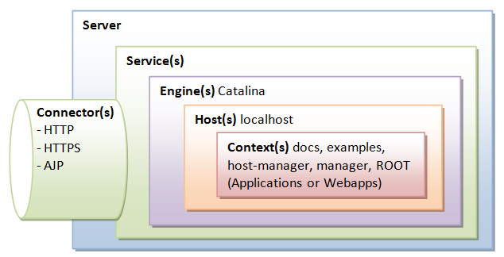

This article is meant for advanced programmers who is interested to know more about Tomcat; or using Tomcat for production. For novices, read "How to Install and Get Started with Tomcat".
The authoritative source of information on Tomcat is the Tomcat's documentation, available under Tomcat's "webapps\docs" directory.
You may also refer to the Java Servlet, JSP and JSF specifications, as Tomcat is the Reference Implementation for these technologies.
I shall assume that Tomcat is installed in d:\myproject\tomcat, and shall denote this directory as <TOMCAT_HOME> or <CATALINA_HOME> - "Catalina" is the codename for Tomcat 5 and above.
1. Tomcat Architecture and Configuration
1.1 Tomcat's Installed Directory Structure
Tomcat installation provides these directories:
- bin: for Tomcat's binaries and startup scripts.
- conf: global configuration applicable to all the webapps. The default installation provides:
- One Policy File: catalina.policy for specifying security policy.
- Two Properties Files: catalina.properties and logging.properties,
- Four Configuration XML Files: server.xml (Tomcat main configuration file), web.xml (global web application deployment descriptors), context.xml (global Tomcat-specific configuration options) and tomcat-users.xml (a database of user, password and role for authentication and access control).
The conf also contain a sub-directory for each engine, e.g., Catalina, which in turn contains a sub-sub-directory for each of its hosts, e.g., localhost. You can place the host-specific context information (similar to context.xml, but named as webapp.xml for each webapp under the host).
- lib: Keeps the JAR-file that are available to all webapps. The default installation include servlet-api.jar (Servlet), jasper.jar (JSP) and jasper-el.jar (EL). You may also keep the JAR files of external package here, such as MySQL JDBC driver (mysql-connector-java-5.1.{xx}-bin.jar) and JSTL (jstl.jar and standard.jar).
- logs: contains the engine logfile Catalina.{yyyy-mm-dd}.log, host logfile localhost.{yyyy-mm-dd}.log, and other application logfiles such as manger and host-manager. The access log (created by the AccessLogValve) is also kept here.
- webapps: the default appBase - web applications base directory of the host localhost.
- work: contains the translated servlet source files and classes of JSP/JSF. Organized in hierarchy of engine name (Catalina), host name (localhost), webapp name, followed by the Java classes package structure.
temp: temporary files.
1.2 Tomcat Architecture
Tomcat is an HTTP server. Tomcat is also a servlet container that can execute Java Servlet, and converting JavaServer Pages (JSP) and JavaServerFaces (JSF) to Java Servlet. Tomcat employs a hierarchical and modular architecture as illustrated:

1.3 Main Configuration File "server.xml"
Tomcat's main configuration file is the "server.xml", kept under the <CATALINA_HOME>\conf directory. The default "server.xml" is reproduced as follows (after removing the comments and minor touch-ups):
- <?xml version='1.0' encoding='utf-8'?>
- <Server port="8005" shutdown="SHUTDOWN">
- <Listener className="org.apache.catalina.core.JasperListener" />
- <Listener className="org.apache.catalina.core.AprLifecycleListener" SSLEngine="on" />
- <Listener className="org.apache.catalina.core.JreMemoryLeakPreventionListener" />
- <Listener className="org.apache.catalina.mbeans.GlobalResourcesLifecycleListener" />
- <Listener className="org.apache.catalina.core.ThreadLocalLeakPreventionListener" />
-
- <GlobalNamingResources>
- <Resource name="UserDatabase" auth="Container"
- type="org.apache.catalina.UserDatabase"
- description="User database that can be updated and saved"
- factory="org.apache.catalina.users.MemoryUserDatabaseFactory"
- pathname="conf/tomcat-users.xml" />
- </GlobalNamingResources>
-
- <Service name="Catalina">
- <Connector port="8080" protocol="HTTP/1.1"
- connectionTimeout="20000"
- redirectPort="8443" />
- <Connector port="8009" protocol="AJP/1.3" redirectPort="8443" />
-
- <Engine name="Catalina" defaultHost="localhost">
-
- <Realm className="org.apache.catalina.realm.LockOutRealm">
- <Realm className="org.apache.catalina.realm.UserDatabaseRealm"
- resourceName="UserDatabase"/>
- </Realm>
-
- <Host name="localhost" appBase="webapps"
- unpackWARs="true" autoDeploy="true">
- <Valve className="org.apache.catalina.valves.AccessLogValve" directory="logs"
- prefix="localhost_access_log." suffix=".txt"
- pattern="%h %l %u %t "%r" %s %b" />
- </Host>
- </Engine>
- </Service>
- </Server>
Server
Server (Line 2) is top component, representing an instance of Tomcat.It can contains one or more Services, each with its own Engines and Connectors.- <Server port="8005" shutdown="SHUTDOWN"> ...... </Server>
Listeners
The Server contains several Listeners (Lines 3-7). A Listener listens and responses to specific events.
- The JasperListener enables the Jasper JSP engine, and is responsible for re-compiling the JSP pages that have been updated.
- <Listener className="org.apache.catalina.core.JasperListener" />
- The GlobalResourcesLifecycleListener enables the global resources, and makes possible the use of JNDI for accessing resources such as databases.
- <Listener className="org.apache.catalina.mbeans.GlobalResourcesLifecycleListener" />
Global Naming Resources
The <GlobalNamingResources> element (Line 9-15) defines the JNDI (Java Naming and Directory Interface) resources, that allows Java software clients to discover and look up data and objects via a name.
The default configuration defines a JNDI name called UserDatabase via the <Resource> element (Line 10-14), which is a memory-based database for user authentication loaded from "conf/tomcat-users.xml".
- <GlobalNamingResources>
- <Resource name="UserDatabase" auth="Container"
- type="org.apache.catalina.UserDatabase"
- description="User database that can be updated and saved"
- factory="org.apache.catalina.users.MemoryUserDatabaseFactory"
- pathname="conf/tomcat-users.xml" />
- </GlobalNamingResources>
You can define other global resource JNDI such as MySQL database to implement connection pooling.
Services
A Service associates one or more Connectors to a Engine. The default configuration defines a Service called "Catalina", and associates two Connectors: HTTP and AJP to the Engine.
- <Service name="Catalina"> ...... </Service>
Connectors
A Connector is associated with a TCP port to handle communications between the Service and the clients. The default configuration defines two Connectors:
- HTTP/1.1: Handle HTTP communication and enable Tomcat to be an HTTP server. Clients can issue HTTP requests to the server via this Connector, and receive the HTTP response messages.
- <Connector port="8080" protocol="HTTP/1.1" connectionTimeout="20000" redirectPort="8443" />
- The default chooses TCP port 8080 to run the Tomcat HTTP server, which is different from the default port number of 80 for HTTP production server. You can choose any number between 1024 to 65535, which is not used by any application, to run your Tomcat server.
- The connectionTimeout attribute define the number of milliseconds this connector will wait, after accepting a connection, for the request URI line (request message) to be presented. The default is 20 seconds.
- The redirect attribute re-directs the SSL requests to TCP port 8443.
- AJP/1.3: Apache JServ Protocol connector to handle communication between Tomcat server and Apache HTTP server.
- <Connector port="8009" protocol="AJP/1.3" redirectPort="8443" />
- You could run Tomcat and Apache HTTP servers together, and let the Apache HTTP server handles static requests and PHP; while Tomcat server handles the Java Servlet/JSP. Read "How To Configure Tomcat to work with Apache".
Containers
Tomcat refers to Engine, Host, Context, and Cluster, as container. The highest-level is Engine; while the lowest-level is Context. Certain components, such as Realm and Valve, can be placed in a container.
Engine
A Engine is the highest-level of a container. It can contains one or more Hosts. You could configure a Tomcat server to run on several hostnames, known as virtual host.
- <Engine name="Catalina" defaultHost="localhost">
The Catalina Engine receives HTTP requests from the HTTP connector, and direct them to the correct host based on the hostname/IP address in the request header.
Realm
A Realm is a database of user, password, and role for authentication (i.e., access control). You can define Realm for any container, such as Engine, Host, and Context, and Cluster.
- <Realm className="org.apache.catalina.realm.LockOutRealm">
- <Realm className="org.apache.catalina.realm.UserDatabaseRealm" resourceName="UserDatabase"/>
- </Realm>
The default configuration defines a Realm (UserDatabaseRealm) for the Catalina Engine, to perform user authentication for accessing this engine. It uses the JNDI name UserDatabase defined in the GlobalNamingResources.
Besides the UserDatabaseRealm, there are: JDBCRealm (for authenticating users to connect to a relational database via the JDBC driver); DataSourceRealm (to connect to a DataSource via JNDI; JNDIRealm (to connect to an LDAP directory); and MemoryRealm (to load an XML file in memory).
Hosts
A Host defines a virtual host under the Engine, which can in turn support many Contexts (webapps).
- <Host name="localhost" appBase="webapps" unpackWARs="true" autoDeploy="true">
The default configuration define one host called localhost. The appBase attribute defines the base directory of all the webapps, in this case, <CATALINA_HOME>\webapps. By default, each webapp's URL is the same as its directory name. For example, the default
Tomcat installation provides four webapps: docs, examples, host-manager and manager under the webapps directory. The only exception is ROOT, which is identified by an empty string. That is, its URL is http://localhost:8080/.
The unpackWARs specifies whether WAR-file dropped into the webapps directory shall be unzipped. For unpackWARs="false", Tomcat will run the application from the WAR-file directly, without unpacking, which could mean slower execution.
The autoDeploy attribute specifies whether to deploy application dropped into the webapps directory automatically.
Cluster
Tomcat supports server clustering. It can replicate sessions and context attributes across the clustered server. It can also deploy a WAR-file on all the cluster.
Valve
A Valve can intercept HTTP requests before forwarding them to the applications, for pre-processing the requests. A Valve can be defined for any container, such as Engine, Host, and Context, and Cluster.
In the default configuration, the AccessLogValve intercepts an HTTP request and creates a log entry in the log file, as follows:
- <Valve className="org.apache.catalina.valves.AccessLogValve" directory="logs"
- prefix="localhost_access_log." suffix=".txt"
- pattern="%h %l %u %t "%r" %s %b" />
Other valves include:- RemoteAddrValve: which blocks requests from certain IP addresses,
- RemoteHostValve: which blocks request based on hostnames,
- RequestDumperValve: which logs details of the requests,
- SingleSignOn Valve: when placed under a <host>, allows single sign-on to access all the webapp under the host.
1.4 Other Configuration Files: web.xml, context.xml, tomcat-users.xml
They are so many things that you can configured in Tomcat. I describe some of the configurations that I found useful in this section.
Enabling Directory Listing
When the request URL refers to a directory instead of a file, e.g., http://host:port/hello/, you can configure Tomcat to serve the directory listing, or a welcome file, or issue error "404 Page Not Found". Enabling directory listing is handy for test server but NOT desire for production server (as it reveal the directory structure and expose the entire directory hierarchy).
Enabling Directory Listing for ALL Webapps
To enable directory listing for all the web applications, you could modify the <CATALINA_HOME>\conf\web.xml, by changing "listings" from "false" to "true" for the "default" servlet, as follows:
- <!-- The default servlet for all web applications, that serves static -->
- <!-- resources. It processes all requests that are not mapped to other -->
- <!-- servlets with servlet mappings. -->
- <servlet>
- <servlet-name>default</servlet-name>
- <servlet-class>org.apache.catalina.servlets.DefaultServlet</servlet-class>
- <init-param>
- <param-name>debug</param-name>
- <param-value>0</param-value>
- </init-param>
- <init-param>
- <param-name>listings</param-name>
- <param-value>true</param-value>
- </init-param>
- <load-on-startup>1</load-on-startup>
- </servlet>
-
- <!-- The mapping for the default servlet -->
- <servlet-mapping>
- <servlet-name>default</servlet-name>
- <url-pattern>/</url-pattern>
- </servlet-mapping>
-
- <!-- ==================== Default Welcome File List ===================== -->
- <!-- When a request URI refers to a directory, the default servlet looks -->
- <!-- for a "welcome file" within that directory and, if present, -->
- <!-- to the corresponding resource URI for display. If no welcome file -->
- <!-- is present, the default servlet either serves a directory listing, -->
- <!-- or returns a 404 status, depending on how it is configured. -->
- <welcome-file-list>
- <welcome-file>index.html</welcome-file>
- <welcome-file>index.htm</welcome-file>
- <welcome-file>index.jsp</welcome-file>
- </welcome-file-list>
The above configuration maps URL "\" (root directory of the web context) (in <url-pattern>) to Java class DefaultServlet (in <servlet-class>) via the common servlet name of default (in <servlet-name>). We enable directory listing by changing the servlet's initialization parameter listings to true.
If a user requests for a directory, and the directory listing is enabled and it contains one of the files in the <welcome-file> list, the welcome file will be served; otherwise, the directory listing will be served. On the other hand, if a directory request is received and the directory listing is not enabled, the server returns an error "404 Page Not Found".
Enabling Directory Listing for a particular Webapp
If you wish to allow directory listing of a particular web application only, you could disable the directory listing in "<CATALINA_HOME>\conf\web.xml" globally, and define the following <servlet> and <servlet-mapping> in your application-specific WEB-INF\web.xml, as follows. You need to use another <servlet-name> in place of DefaultServlet.
- <servlet>
- <servlet-name>DirectoryListing</servlet-name>
- <servlet-class>org.apache.catalina.servlets.DefaultServlet</servlet-class>
- <init-param>
- <param-name>debug</param-name>
- <param-value>0</param-value>
- </init-param>
- <init-param>
- <param-name>listings</param-name>
- <param-value>true</param-value>
- </init-param>
- </servlet>
-
- <servlet-mapping>
- <servlet-name>DirectoryListing</servlet-name>
- <url-pattern>/</url-pattern>
- </servlet-mapping>
Automatic Servlet Reload
To enable automatic servlet reload (whenever a servlet is re-compiled), you need to specify <Context reloadable="true">...</Context>, in "<CATALINA_HOME>\conf\context.xml" for all web applications, or the <Context> element in "<CATALINA_HOME>\conf\server.xml" for a particular web application.
The following messages appear on the Tomcat's console if you re-compile a servlet:
- XXX X, XXXX XX:XX:XX XX org.apache.catalina.core.StandardContext reload
- INFO: Reloading Context with path [/hello] has started
- XXX X, XXXX XX:XX:XX XX org.apache.catalina.core.StandardContext reload
- INFO: Reloading Context with path [/hello] is completed
Enabling automatic servlet reload is handy during application development, but it requires significant runtime overhead to listen to the changes, and is not recommended for production systems. Instead, you could use the "manager" to trigger reloads on demand.
Setting the Context Root Directory and Request URL of a Webapp
A server could run many web applications. A webapp is also called a web context. The context root (or document base directory) refers to the base directory of a webapp. They are a few ways to configure a context root and its request URL of a webapp:
- 1. (RECOMMENDED) Create a directory under <CATALINA_HOME>\webapps for your webapp. A context will be created with request URL set to the name of the directory. For example, if you create a directory called "hello" under Tomcat's "webapps". This application can be accessed by web users via URL http://host:port/hello.
- To change the request URL of the webapp, create a "context.xml" configuration file, as follows, and place it under "ContextRoot\META-INF":
- <Context path="/yourURLPath" />
- 2. Alternatively, you can write a <Context> element in <CATALINA_HOME>\conf\server.xml, under the <Host> element. You can specify both the URL and the base directory. For example,
- ......
- ......
- <Context path="/ws" docBase="d:/workshop" reloadable="true">
- </Context>
- </Host>
- </Engine>
- </Service>
- </Server>
- In the above example, we define a web context with URL "/ws", with context root (docBase or document base directory) at "d:\workshop". This application can be accessed via URL http://host:port/ws.
- Take note that:
- The configuration creates a mapping from the "URL Path" issued by the web users to the "document base directory" in the server's file system, where you store your webapp resources.
- Place the <Context> element before the ending tag of the <Host> element.
- Use Unix-style forward slash '/' as the directory separator in the configuration file, instead of Window-style back slash '\'.
- The attribute reloadable="true" asks Tomcat to monitor your servlets for changes, and automatically reload the servlets if changes is detected. This is handy for a development system, but inefficient in a production system.
- 3. Write a configuration file with a <Context> element and place it under Tomcat's "conf\Catalina\localhost". For example, suppose we wish to create a webapp with URL "hello" in base directory "d:\myproject\myHello", create the following file "hello.xml":
- <?xml version="1.0" encoding="UTF-8"?>
- <Context docBase="D:\myproject\myHello" path="/hello" />
Changing the Default "webapps" Directory
The default directory for deploying web applications is <CATALINA_HOME>\webapps. You could change the default by modifying the configuration file "conf\server.xml" <Host> element's "appBase" attribute as follows:
- <Host name="localhost" appBase="webapps"
- unpackWARs="true" autoDeploy="true"
- xmlValidation="false" xmlNamespaceAware="false">
- ......
- </host>
2. Deploying Webapps
A web context is a single web application (webapp). It is the lowest-level container, that you can define components such as Realm and
Valve. By default, all webapps are kept under the <CATALINA_HOME>\webapps directory (as configured in the <host> element appBase attribute.
A Java webapp may contain many types of files, such as HTML, CSS, Scripts, images, JSP, servlet, utility classes, external library jar-files. A Java webapp must follow a strict directory structure as depicted in the Servlet/JSP specifications. This enables deployment in a
Java-capable web server (such as Apache Tomcat and Glassfish). The resources must be kept in the correct directories and sub-directories.
The URL of a webapp, by default, is the same as the base directory name (or context root) of the webapp.
2.1 Webapp's Directory Structure
The directory structure of a webapp is as follows:
- "ContextRoot": contains the resources that are visible and accessible by the web clients, such as HTML, CSS, Scripts and images. These resources will be delivered to the clients as it is. You could create sub-directories such as images, css and scripts, to further categories the various resources.
- "ContextRoot\WEB-INF": This directory, although under the context root, is NOT visible to the web users. In other words, it is NOT accessible by the clients directly (for security reason). This is where you keep your application-specific configuration files such as "web.xml". It's sub-directories contain program classes, source files, and libraries.
- "ContextRoot\WEB-INF\src": Keeps the Java program source files. It is optional but a good practice to separate the source files and classes to facilitate deployment.
- "ContextRoot\WEB-INF\classes": Keeps the Java classes (compiled from the source codes). Classes defined in packages must be kept according to the Java package directory structure.
- "ContextRoot\WEB-INF\lib": Keeps the libraries (jar-files), which are provided by other packages, specific and available to this webapp only.
- "ContextRoot\META-INF\": This is also a hidden directory, to keep resources and configurations (e.g., "context.xml") related to the server. In contrast, "WEB-INF" is for resources related to this web application, independent of the server.
2.2 Webapp-Specific Configuration Files
These are the configuration files specific to a webapp: (a) WEB-INF\web.xml; (b) META-INF\context.xml.
You can configure a webapp in many ways:
- (a) Write a <context> element in server.xml under <Host> element,
- (b) contextRoot\META-INF\context.xml, and
- (c) conf\Catalina\localhost\webapp.xml, and
- (d) conf\context.xml. See "Setting the Context Root Directory and Request URL of a Webapp".
2.3 Web Application Deployment Descriptors - "web.xml"
The "web.xml" contains the deployment descriptors. There are two sets of web.xml:
- 1. <CATALINA_HOME>\conf\web.xml: applicable to ALL webapps.
- 2. ContextRoot\WEB-INF\web.xml: applicable to the specific web context. It overrides the global setting, if any.
The complete specification for "web.xml" can be found in the "Java Servlet Specification" under "Deployment Descriptor".
A sample configuration of a servlet with most of its sub-elements is as follows:
- <web-app ......>
- ......
- <servlet>
- <icon>
- <small-icon>/images/icon.jpg</small-icon>
- </icon>
- <servlet-name>MyServlat</servlet-name>
- <display-name>My Servlet Display Name</display-name>
- <description>My Testing Servlet long description</description>
- <servlet-class>MyServletClassname</servlet-class>
- <init-param>
- <param-name>myParmName</param-name>
- <param-value>myParmValue</param-value>
- </init-param>
- <load-on-startup>25</load-on-startup>
- </servlet>
- ......
-
- <servlet-mapping>
- <servlet-name>MyServlat</servlet-name>
- <url-pattern>/sayhello</url-pattern>
- </servlet-mapping>
- ......
- </web-app>
2.4 Deploying a Web Application in a WAR file
You could use the JDK's jar utility to "zip" up all the files of a web application to produce a so-called WAR (Web Application Archive) file for deployment, or distribution.
- .... Change current directory to the web application's context root
- contextRoot> jar cvf test.war .
Drop the test.war into <CATALINA_HOME>\webapps. A context called test will be created automatically. You can access the web application via URL http://host:port/test.
Tomcat actually unpacks the test.war into a "test" directory in <CATALINA_HOME>\webapps. You need to remove this directory, if you reload a new version.
3. Running Tomcat
3.1 Tomcat's Manager
References:- 1. "Tomcat Web Application Manager How To" @ "webapps/docs/html-manager-howto.html".
- 2. "Tomcat Manager App How-To" @ "webapps/docs/manager-howto.html".
Tomcat "manager" webapp allows you to deploy a new web application; start, stop, reload or un-deploy an existing one, without having to shut down and restart the server, in a production environment.
To enable Tomcat's manager, edit "<CATALINA_HOME>\conf\tomcat-users.xml" to include a role called "manager-gui" and a user with this role. You may also assign other roles, such as admin-gui for accessing the Tomcat "Host Manager".
- <role rolename="manager-gui" />
- <role rolename="manager-status" />
- <role rolename="manager-script" />
- <role rolename="manager-jmx" />
- <role rolename="admin-gui" />
- <role rolename="admin-script" />
-
- <user username="mymanager" password="xxxx" roles="manager-gui, admin-gui"/>
To invoke manager web application, use http://localhost:8080/manager/html. You can use Tomcat's manager to:
- 1. List all webapps.
- 2. Start/Stop/Reload a particular webapp.
- 3. Deploy a new webapp remotely, and undeploy a webapp without restarting the container.
- 4. Terminate (or Invalidate) sessions - a session has a pre-set expiry time (e.g., 30 sec).
- 5. Analyze memory leaks.
- 6. View JVM status and Server status.
Tomcat 7 provides separate manager roles for the GUI (manager-gui), status (manager-status), scripting (manager-script) and JMX proxy (manager-jmx), defined in "webapps/manager/WEB-INF/web.xml". This allows for fine-grained access control to management tasks.
- manager-gui - Access to the HTML "web" interface, via:
- http://{host}:{port}/manager/html
- manager-status - Access to the "Server Status" page only, via:
- http://{host}:{port}/manager/status
- manager-script - Access to the "plain-text" interface, and to the "Server Status" page, via command in the form of:
- http://{host}:{port}/manager/text/{command}?{parameters}
- // Examples
- http://{host}:{port}/manager/text/list // List all webapps
- http://{host}:{port}/manager/text/deploy?path=/testapp // Deploy webapp
- manager-jmx - Access to JMX proxy interface and to the "Server Status" page, via:
- http://{host}:{port}/manager/jmxproxy/?{command}={parameter}
For security reason, a user should NOT be given more than one of the following roles: manager-gui, manager-script, and manager-jmx.
Tomcat's "Administration Tool"
The Tomcat "Adminstrative Tool" (or "Administrator Console") has been removed since Tomcat 6. Use JMX manager instead.
3.2 Automatic Startup at Boot-time
(Windows) Running Tomcat as a Windows Service
You need to download the Windows-specific version of Tomcat (from Tomcat's download, choose 32-bit or 64-bit Windows' zip version, e.g., apache-tomcat-7.0.{xx}-windows-x86.zip).
Read "Windows service How-To" in the Tomcat documentation (<CATALINA_HOME>\webapps\docs\windows-service-howto.html).
In a production environment, it is more convenient to run Tomcat as a service, so that it can start automatically whenever the system is started (or re-start automatically after an unexpected interruption).
To install Tomcat as a service, start a CMD shell (with administrator right) and run the <CATALINA_HOME>\bin\service.bat with install option:
- ... Change directory to <CATALINA_HOME>\bin ...
- <CATALINA_HOME>\bin> service install
- Installing the service 'Tomcat7' ...
- ......
- The service 'Tomcat7' has been installed.
The Tomcat service called "Apache Tomcat 7" is installed and will start automatically whenever the system is started. Check the "Services" under "Control Panel" ⇒ "Administrative Tools".
A GUI application called Tomcat7w is available for monitoring and configuring Tomcat services. Launch Tomcat7w:- <CATALINA_HOME>\bin> Tomcat7w
You could put the Tomcat icon in the system tray via the MS (Monitor Service) option:- <CATALINA_HOME>\bin> Tomcat7w //MS//
You can start/stop the Tomcat service now via:
- 1. Tomcat7w;
- 2. "Control Panel" ⇒ "Administrator Tools" ⇒ "Services" ⇒ "Apache Tomcat 7" ⇒ "Start";
- 3. From CMD shell, Issue "net" command:
- prompt> net start tomcat7
- The Apache Tomcat 7 service is starting..
- The Apache Tomcat 7 service was started successfully.
- ......
- ......
- prompt> net stop tomcat7
- The Apache Tomcat 7 service is stopping..
- The Apache Tomcat 7 service was stopped successfully.
To uninstall Tomcat Service, run the <CATALINA_HOME>\bin\service.bat with remove option:- <CATALINA_HOME>\bin> service remove
- The service 'Tomcat7' has been removed
You can also use Microsoft Management Console (MMC) to manage the services: Go to "Start" ⇒ ⇒ Run ⇒ enter "services.msc".
A flip side of running Tomcat as a service is you need to read the error messages from <CATALINA_HOME>\logs instead of the Tomcat console.
(Linux and Mac OS) Automatic Startup on Reboots
To start Tomcat automatically when the machine boots up, you need to create a init script in /etc/init.d, e.g., /etc/init.d/tomcat, as follows:
- #!/bin/sh
- # Tomcat init script for Linux.
- #
- JAVA_HOME={path-to-java-installed-directory}
- CATALINA_HOME={path-to-Tomat-installed-directgory}
- export JAVA_HOME CATALINA_HOME
- exec $CATALINA_HOME/bin/catalina.sh $*
Save the script as "tomcat" in /etc/init.d.
- $ cd /etc/init.d
- $ sudo chown root.root tomcat // change owner to user root, group root
- $ sudo chmod 755 tomcat // change mode u+rwx, g+rx, a+rx
You can start|stop|restart Tomcat via:- $ service tomcat start|stop|restart
3.3 Tomcat's Startup Script
To start tomcat server, you could invoke the batch file "startup.bat" (for Windows) or "startup.sh" (for Linux/Mac) (in directory "<CATALINA_HOME>\bin", where <CATALINA_HOME> refers to the Tomcat installed directory). The "startup.bat|startup.sh" invokes "catalina.bat start|catalina.sh start".
Alternatively, you could call the "catalina.bat|catalina.sh" directly, which provides more options of starting Tomcat. Enter "catalina" to view the options:
- <CATALINA_HOME>/bin> catalina
- Using CATALINA_BASE: D:\xxx\tomcat7.0.{xx}
- Using CATALINA_HOME: D:\xxx\tomcat7.0.{xx}
- Using CATALINA_TMPDIR: D:\xxx\tomcat7.0.{xx}\temp
- Using JRE_HOME: d:\xxx\jdk1.6
- Usage: catalina ( commands ... )
- commands:
- debug Start Catalina in a debugger
- debug -security Debug Catalina with a security manager
- jpda start Start Catalina under JPDA debugger
- run Start Catalina in the current window
- run -security Start in the current window with security manager
- start Start Catalina in a separate window
- start -security Start in a separate window with security manager
- stop Stop Catalina
- configtest Run a basic syntax check on server.xml
- version What version of tomcat are you running?
Study the source codes of "catalina.bat|catalina.sh". Take note that the environment variable JAVA_HOME is needed in this script.
The other scripts provided are:
- shutdown.bat|shutdown.sh: for shuting down the Tomcat server.
- configtest.bat|configtest.sh: for checking the configuration file server.xml, same as "catalina configtest".
- version.bat|version.sh: for displaying the versions, same as "catalina version".
- digest.bat|digest.sh: making password hash and encrypting password.
- Internal used: setclasspath.bat|setclasspath.sh, cpappend.bat (classpath append), tool-wrapper.bat|tool-wrapper.sh, daemon.sh.
4. Security
4.1 Realm and User Authentication in Tomcat
References:
- 1. "Realm Configuration HOW-TO" (@ "<CATALINA_HOME>\webapps\docs\realm-howto.html").
- 2. "Java EE 5 Tutorial", Part IV "Services", Chapters 28-30 on Security.
In Information Security:- Access control deals with identifying which resources require protection, and which users (roles) are authorized to access the protected resources.
- Authentication deals with verifying users' credential, i.e., ensuring the user is "who he said he is". User's credential is typically provided in the form of username/password and possibly IP address (hostname). Other means include biometrics (finger-print, face recognition, retina) and digital certificates.
- Confidentiality deals with the encryption of the transmitted data over the network. This is often carried out via employing HTTP over SSL (Secure Socket Layer), known as HTTPS.
- Message Integrity ensures that messages are not tempered during transmission. This is done via message digest or hash.
- Non-repudiation: If he/she has sent a message, he/she cannot deny. This is done via digital certificate and public/private keys.
Security can be managed by the webapps themselves (called application-managed security) or via the Tomcat container (called container-managed security). In container-managed security, security is handled by the server. The server-side programs (servlets, JSPs) do not need any security-aware code. That is, the security control is totally transparent to the server-side programs. This section shall deal with container-managed security for access control and authentication.
In Tomcat, a user is identified via username/password. A user is assigned role(s) (e.g., manager, admin, user, etc). Tomcat grants access for webapps to role(s), instead of individual users.
A realm is a collection of usernames/passwords and roles. Tomcat supports the following types of realms:
- UserDatabaseRealm: kept in a XML file "conf\tomcat-users.xml", accessed via JDNI (Java Naming and Directory Interface).
- JDBCRealm: kept in a relational database such as MySQL, accessed via JDBC.
- others: JNDIRealm (uses LDAP directory), JAASRealm (Java Authentication and Authorization Service).
You can used the <realm> element to configure a realm in "conf\server.xml". <realm> element can be placed in <engine>, <host>, or <context>, which determines the scope of the realm: all virtual hosts under the engine, a particular host, or a particular web application.
4.2 UserDatabaseRealm
UserDatabaseRealm stores user information in a XML file and accessed via JNDI (Java Naming and Directory Interface). By default, the XML file is "<CATALINA_HOME>\conf\tomcat-users.xml". UserDatabaseRealm is loaded into memory from the specified file, and kept in memory until Tomcat is shut down.
Tomcat provide a JSP example called "FORM Authentication" (@ http://localhost:8080/examples/jsp/security/protected/index.jsp"), which uses UserDatabaseRealm. Let us study this example. But before we get into the codes, let's look at the Tomcat's configurations.
"conf\server.xml"
You can specify the type of realm to be used via <Realm> element in server.xml. In this case, UserDatabaseRealm. The <Realm> is defined within the <Engine> elements, and thus applicable to all the virtual hosts and webapps, under this server.
To specify the file used in UserDatabaseRealm, a JDNI resource named "UserDatabase" is defined, which maps to the file "conf\tomcat-users.xml".
- <Server ...... >
- <!-- Global JNDI resources -->
- <GlobalNamingResources>
- <!-- Editable user database that can also be used by
- UserDatabaseRealm to authenticate users -->
- <Resource name="UserDatabase" auth="Container"
- type="org.apache.catalina.UserDatabase"
- description="User database that can be updated and saved"
- factory="org.apache.catalina.users.MemoryUserDatabaseFactory"
- pathname="conf/tomcat-users.xml" />
- </GlobalNamingResources>
-
- <Service name="Catalina">
- <Engine name="Catalina" defaultHost="localhost">
- <!-- Use the LockOutRealm to prevent attempts to guess user passwords
- via a brute-force attack -->
- <Realm className="org.apache.catalina.realm.LockOutRealm">
- <Realm className="org.apache.catalina.realm.UserDatabaseRealm"
- resourceName="UserDatabase" />
- </Realm>
- <Host name="localhost" ......
- ......
- </Host>
- </Engine>
- </Service>
- </Server>
"conf\tomcat-users.xml"
Recall that a user is identified via username/password. A user is assigned role(s). Accesses for web applications are granted to role(s) instead of individual users. "Tomcat-users.xml" contains the following roles and username/password, but commented-out. Uncomment them for testing the example. Two roles, tomcat and role1, and three users, tomcat, role1 and both are defined.
- <?xml version="1.0" encoding="ISO-8859-1" ?>
- <tomcat-users>
- <role rolename="tomcat" />
- <role rolename="role1" />
-
- <user username="tomcat" password="tomcat" roles="tomcat" />
- <user username="both" password="tomcat" roles="tomcat,role1" />
- <user username="role1" password="tomcat" roles="role1" />
- </tomcat-users>
Take note that the passwords are stored in clear text, which is not really desirable.
"ContextRoot\WEB-INF\web.xml"
For Tomcat's webapp called "examples", the security roles are defined using <security-constraint> element in "webapps\examples\WEB-INF\web.xml" as follows. The URL patterns /jsp/security/protected/* are accessible by users having roles of tomcat and role1 only.
- <web-app ......>
- ......
- <security-constraint>
- <display-name>Example Security Constraint</display-name>
- <web-resource-collection>
- <web-resource-name>Protected Area</web-resource-name>
- <!-- Define the context-relative URL(s) to be protected -->
- <url-pattern>/jsp/security/protected/*</url-pattern>
- <!-- If you list http methods, only those methods are protected -->
- <http-method>DELETE</http-method>
- <http-method>GET</http-method>
- <http-method>POST</http-method>
- <http-method>PUT</http-method>
- </web-resource-collection>
- <auth-constraint>
- <!-- Anyone with one of the listed roles may access this area -->
- <role-name>tomcat</role-name>
- <role-name>role1</role-name>
- </auth-constraint>
- </security-constraint>
-
- <!-- Default login configuration uses form-based authentication -->
- <login-config>
- <auth-method>FORM</auth-method>
- <realm-name>Example Form-Based Authentication Area</realm-name>
- <form-login-config>
- <form-login-page>/jsp/security/protected/login.jsp</form-login-page>
- <form-error-page>/jsp/security/protected/error.jsp</form-error-page>
- </form-login-config>
- </login-config>
-
- <!-- Security roles referenced by this web application -->
- <security-role>
- <role-name>role1</role-name>
- </security-role>
- <security-role>
- <role-name>tomcat</role-name>
- </security-role>
4.3 HTML FORM-based Authentication Method
The example uses HTML FORM-based authentication method, defined in element <login-config>. All accesses to the protected URLs (http://localhost:8080/examples/jsp/security/protected/*) will be redirected to the login.jsp page (defined in <form-login-page>), which prompts user for the credential. For example, if a user requests for http://localhost:8080/examples/jsp/security/protected/index.jsp, the login.jsp will be displayed.
The login.jsp page contain a html <form> (thus called FORM-based authentication):
- <html>
- <head><title>Login Page for Examples</title></head>
- <body>
- <form method="POST" action='<%= response.encodeURL("j_security_check") %>' >
- Username:<input type="text" name="j_username">
- Password:<input type="password" name="j_password">
- <input type="submit" value="Log In">
- </form>
- </body>
- </html>
The login page submits the username and password in parameters j_username and j_password to j_security_check. <input type="password" ...> is used for password text field, which displays the password as *'s. The response.encodeURL(URL) encodes the URL j_security_check by including the session ID if URL-rewriting is used for session tracking; it returns the URL unchanged if cookie is used. For robust session tracking, all URLs emitted by server-side programs (servlet/JSP) should be run through this method.
If login fails, user will be redirected to error.jsp page, as follows,
- <html>
- <head><title>Error Page For Examples</title></head>
- <body>
- Invalid username and/or password, please try again
- <a href='<%= response.encodeURL("index.jsp") %>'>again</a>.
- </body>
- </html>
If login succeeds, the user will get the page he requested for. Study the "examples\jsp\security\protected\index.jsp" source.
To logoff, terminate the current session via session.invalidate().
You can use request.getRemoteUser() to get the authenticated login username; request.getUserPrincipal() to get a java.security.Principal object containing the name of the current authenticated user; request.isUserInRole(role) to check if the authenticated user is included in the specified role.
4.4 HTTPS
In FORM-based authentication, the username/password are sent in clear text, and susceptible to eavesdropping. Hence, it is important to encrypt the transport by turning on SSL (HTTPS). Read "Tomcat with SSL" on how to setup Tomcat with SSL.
To enforce user to use secure transport (HTTPS), add a <transport-guarantee>CONFIDENTIAL</transport-guarantee>, inside the
- <security-constraint>, as follows:
- <security-constraint>
- <display-name>Example Security Constraint</display-name>
- <web-resource-collection>
- <web-resource-name>Protected Area</web-resource-name>
- <url-pattern>/jsp/security/protected/*</url-pattern>
- ......
- </web-resource-collection>
- <auth-constraint>
- <role-name>tomcat</role-name>
- ......
- </auth-constraint>
- <!-- must use SSL for secure transport -->
- <user-data-constraint>
- <transport-guarantee>CONFIDENTIAL</transport-guarantee>
- </user-data-constraint>
- </security-constraint>
All accesses to HTTP at port 8080 (e.g., http://localhost:8080/examples/jsp/security/protected/index.jsp) will be redirected to HTTPS at port 8443 (e.g., https://localhost:8443/examples/jsp/security/protected/index.jsp).
4.5 HTTP BASIC Authentication
HTTP defines two access authentication schemes to request for username/password: Basic and Digest. Read "HTTP Authentication".
To use BASIC authentication, change the <login-config>'s <auth-method> to BASIC.
- <login-config>
- <auth-method>BASIC</auth-method>
- <realm-name>Basic Authentication Area</realm-name>
- <!-- Removed, no applicable for BASIC authentication
- <form-login-config>
- <form-login-page>/jsp/security/protected/login.jsp</form-login-page>
- <form-error-page>/jsp/security/protected/error.jsp</form-error-page>
- </form-login-config>
- -->
- </login-config>
In BASIC authentication, Tomcat uses the HTTP Basic Authentication to ask for username and password. Try http://localhost:8080/examples/jsp/security/protected/index.jsp, you will be prompted for username/password automatically. There is no redirect to login.jsp and no need to write the login.jsp.
Again, the HTTP Basic Authentication sends the username and password in clear text (password is encoded in Base64, but not encrypted). It is totally insecure, unless you use a secure transport (HTTPS) or VPN (Virtual Private Network).
The Tomcat's webapp manager (under webapps/manager) uses BASIC authentication.
4.6 HTTP DIGEST Authentication
To use DIGEST authentation, change the <login-config>'s <auth-method> to DIGEST. In DIGEST authentication, Tomcat uses HTTP Digest Authentication Scheme to ask for username/password. Instead of sending password in clear text, the digest of password is send to the server. Although DIGEST authentication is more secure than BASIC authentication, HTTPS is much more secure.
- <login-config>
- <auth-method>DIGEST</auth-method>
- <realm-name>Digest Authentication Area</realm-name>
- </login-config>
4.7 JDBCRealm
UserDatabaseRealm is not meant for serious production environment, as it is hard to maintain. JDBCRealm is more appropriate.
In JDBCRealm, user information is kept in a relational database, such as MySQL, accessed via JDBC, instead of an XML file. The information can be secured thruough proper database security.
Setting up Database
We shall set up our user database in MySQL. Read "How to Install MySQL and Get Started" if you are new to MySQL.
The following script can be used to set up the user database. Two tables are required: a users table containing username and password, and a user_roles containing username and the role assigned.
create database tomcat_users;
- use tomcat_users;
-
- create table users (
- username varchar(15) not null,
- password varchar(15) not null,
- primary key (username)
- );
-
- create table user_roles (
- username varchar(15) not null,
- role varchar(15) not null,
- primary key (username, role)
- );
-
- insert into users values
- ('tomcat', 'tomcat'),
- ('both', 'tomcat'),
- ('role1', 'tomcat');
-
- insert into user_roles values
- ('tomcat', 'tomcat'),
- ('role1', 'role1'),
- ('both', 'tomcat'),
- ('both', 'role1');
JDBC Driver
Next, copy the MySQL's JDBC driver ("mysql-connector-java-5.1.{xx}-bin.jar") into Tomcat's lib ("<CATALINA_HOME>\lib"). Read "How to Install MySQL and Get Started"
"conf\server.xml"
Again, the realm is defined in server.xml via a <Realm> element. In this case, a JDBCRealm, with a connectionURL providing a MySQL database connection.
- <Realm className="org.apache.catalina.realm.JDBCRealm"
- driverName="com.mysql.jdbc.Driver"
- connectionURL="jdbc:mysql://localhost:{port}/tomcat_users"
- connectionName="{dbuser}"
- connectionPassword="{dbpassword}"
- userTable="users" userNameCol="username" userCredCol="password"
- userRoleTable="user_roles" roleNameCol="role" />
Replace the {port} with your MySQL server port number, and {dbuser} and {dbpass} with an authorized MySQL username/password.
"ContextRoot\WEB-INF\web.xml"
Same as UserDatabaseRealm.
Authentication Methods
Same as UserDatabaseRealm, you can use FORM, BASIC or DIGEST authentication method.
Testing
You need to start MySQL server before starting the Tomcat Server.
4.8 Single Login
By default, each protected webapp would request for login during the first access. You can enable single login to all webapps under the host by uncommenting the single-login valve, as follows:
- <Host ......>
- <!-- SingleSignOn valve, share authentication between web applications
- Documentation at: /docs/config/valve.html -->
- <Valve className="org.apache.catalina.authenticator.SingleSignOn" />
- </Host>
4.9 Tomcat with SSL
SSL (Secure Socket Layer), allows web browsers and web servers to communicate over a secured (encrypted) connection. Tomcat provides built-in support for SSL.
Read:
- "SSL Configuration How-to" of Tomcat Documentation @ "<CATALINA_HOME>\webapps\docs\ssl-howto.html".
- "keytool - Key and Certificate Management Tool" @ JDK documentation.
The steps to turn on SSL support are:
Step 1: Check your JDK version. Tomcat's SSL uses Java Secure Socket Extension (JSSE), which has been integrated into JDK since 1.4.
Step 2: Prepare the Tomcat's server certificate, using the JDK's Key and Certificate Management Tool called "keytool" (in
- "<JAVA_HOME>\bin" ), as follows:
- > keytool
- ... display the help menu ...
-
- // Generate a self-signed certificate for Tomcat
- > keytool -genkey -alias tomcat -keyalg RSA -keystore {TOMCAT_HOME}\conf\.keystore
- Enter keystore password: xxxxxxxx
- Re-enter new password: xxxxxxxx
- What is your first and last name?
- [Unknown]:
- What is the name of your organizational unit?
- [Unknown]:
- What is the name of your organization?
- [Unknown]:
- What is the name of your City or Locality?
- [Unknown]:
- What is the name of your State or Province?
- [Unknown]:
- What is the two-letter country code for this unit?
- [Unknown]:
- Is CN=Unknown, OU=Unknown, O=Unknown, L=Unknown, ST=Unknown, C=Unknown correct?
- [no]: y
- Enter key password for <tomcat>
- (RETURN if same as keystore password):
- The "-genkey" option is used to generate a public-private key pair. The public key is wrapped into an X.509 v1 self-signed certificate. The certificate and the private key are stored in a new keystore entry identified by the alias. In our case, the alias name must be "tomcat".
The "-keyalg" option specifies the key generation algorithm. RSA public key algorithm is used in this case.
- The "-keystore" option specifies the name and location of the key store file.
- The password for alias tomcat must be the same as the keystore (i.e., hit enter for the last question).
Step 3: Enable SSL support for Tomcat. SSL is built into Tomcat. The Tomcat's configuration file commented out the SSL configuration directive. Uncomment them by removing the <!-- and --> around the SSL Coyote HTTP/1.1 Connector as follows:
- <!-- Define a SSL HTTP/1.1 Connector on port 8443
- This connector uses the JSSE configuration, when using APR, the
- connector should be using the OpenSSL style configuration
- described in the APR documentation -->
- <Connector port="8443" protocol="org.apache.coyote.http11.Http11Protocol"
- SSLEnabled="true" maxThreads="150" scheme="https" secure="true"
- clientAuth="false" sslProtocol="TLS"
- keystoreFile="{TOMCAT_HOME}\conf\.keystore"
- keystorePass="passwordOfKeyStore" />
Note that the SSL (or HTTPS) is running on port 8443 instead of its default port number 443.
Add in the keystoreFile and keyStorePass attributes. The keystoreFile attribute specified the location of the keystore file. The keyStorePass provides the password for accessing the keystore file.
Step 4: Start your tomcat (run "<CATALINA_HOME>\bin\startup.bat"). After that, start a web browser and issue an HTTPS request as follows:
5. Clustering
5.1 Configuring Virtual Hosts
To set up a virtual host called "www.mytest.com" (suppose that you have registered this hostname with at static IP address). Include the following <Host> element in server.xml under the Engine Catalina:
- <Engine name="Catalina" >
- <Host name="localhost .....>
- ......
- </Host>
- <Host name="www.mytest.com" appBase="webapps_mytest.com"
- unpackWARs="true" autoDeploy="true" >
- <Alias>mytest.com</Alias>
- <Valve className="org.apache.catalina.valves.AccessLogValve"
- directory="logs"
- prefix="mytest.com_access_log." suffix=".log"
- pattern="%h %l %u %t "%r" %s %b"
- resolveHosts="false" />
- </Host>
- </Engine>
The above lines configure a virtual host with hostname "www.mytest.com", with webapps base directory at "<CATALINA_HOME>\webapps_mytest.com".
We also define a alias called "mytest.com". That is, this host can be accessed via http://www.mytest.com:port or http://mytest.com:port. We also define a Valve, which intercepts the request message to write a log entries (similar to localhost).
Next:
- 1. Create a directory "webapps_mytest.com" under <CATALINA_HOME>, according to the appBase.
- 2. Create a web application called ROOT, by creating a directory ROOT under the "webapps_mytest.com". Recall that ROOT was configured with an empty string URL. In other words, http://www.mytest.com:port/ accesses the ROOT application.
- 3. Create a directory "www.mytest.com" under "conf\Catalina".
- 4. Write a welcome page called "index.html" and save it in "webapps_mytest.com\ROOT".
- <html>
- <head><title>Testing Virtual Host</title></head>
- <body>
- <h1>It's work on virtual host</h1>
- </body>
- </html>
- To test the virtual host, without registering the hostname with an ISP, edit "C:\Windows\System32\drivers\etc\hosts" to include the following lines (required administrative authority):
- 127.0.0.1 www.mytest.com
- 127.0.0.1 mytest.com
These lines maps host names www.mytest.com and mytest.com to IP address 127.0.0.1, which is the localhost. As the IP software checks the host file before asking Domain Name Service (DNS) to resolve a host name, you willl be able to test your virtual host.
Now, you are ready to test the virtual hosts. Start the Tomcat server and issue these URL:
- http://www.mytest.com:8080
- http://mytest.com:8080
- http://www.mytest.com:8080/
- http://mytest.com:8080/
- http://www.mytest.com:8080/index.html
- http://mytest.com:8080/index.html
5.2 Tomcat Host Manager for Clustering and Admin Roles
Reference: "Clustering/Session Replication HOW-TO" @ "webapps/docs/cluster-howto.html".
The Tomcat "host-manager" webapp allows you to manage Tomcat clusters. To access host-manager, you need to define a user with admin role.
The admin role has been separated out as admin-gui and admin-script, in Tomcat 7, as defined in webapps/host-manager/WEB-INF/web.xml.
The "Host Manager" web application can be accessed via http://{host}:{port}/host-manager/html.
END